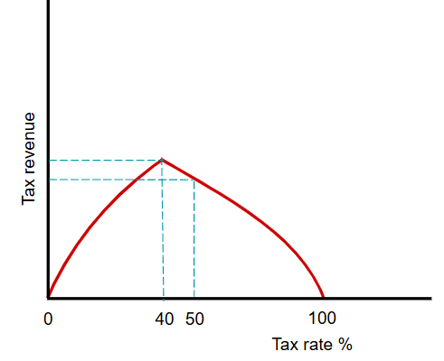

There are many reasons why fiscal policy may not be effective in achieving all the macroeconomic objectives at the same time:
Expansionary fiscal policy can increase economic growth and reduce cyclical unemployment. However, the higher aggregate demand can increase demand-pull inflation and can increase a deficit on the current account of the balance of payments.
Contractionary fiscal policy can improve two of the macroeconomic objectives but can also threaten to worsen the other two. In this case, a lower aggregate demand may help a government to achieve low inflation and a balance on the current account. However this may lead to higher cyclical unemployment and lower actual growth.
There is a debate among economists whether higher government spending will always lead to higher aggregate demand.
New classical economists argue that higher government spending, financed by increased borrowing, reduces funds availible to lend to the private sector and drives up rate of interest, which reduces consumption and private sector investment. The higher interest rate can also attract foreign financial investment which could increase the exchange rate and reduce net exports. So increased public spending crowds out private sector spending.
Keynesians reject the idea that crowding out occurs and argue that crowding in occurs. This is the view that higher government spending raises GDP by multiplier amount. The higher income will increase saving, which provide funds availible to lend. The higher income also encourages a rise in consumption and investment. This would mean higher public spending can increase private sector investment.
There is no certainty as to how households and firms will respond to changes in fiscal policy. For example, a cut in income tax rates may not increase consumption and investments if households/firms expect that tax cuts will soon be reversed.
Due to time lags involved in fiscal policy, there is a risk that the policy may act to reinforce the business cycle rather than counter it.
For example, an economy may be entering a recession. The government will take time to recognise the problem, decide on the policy tools and implement them. It will also take time for households/firms to react to the changes. In this case, expansionary fiscal policy will have an impact when the negative output gap has been closed and a positive output gap is occuring. As a result, the fiscal policy measures adopted will add to inflationary pressure.
Some forms of government spending can involve a long-term commitment to higher spending.
For example, if a government decides to build more state-run hospitals, it will have to finance the extra staff and equipment costs for decades to come even when the economy is booming.
Fiscal policy is the main policy used to redistribute income and promote developement. Progressive taxes and transfer payments move money from the rich to those on low incomes. Government spending on state healthcare and education can also benefit those on low income.
There is a risk, however, that an increase in transfer payments may reduce the incentive for the unemployed to seek work. If this is the case, the umeployed and their childrean may experience greater poverty in the long run than if they had accepted a low paying job. Being employed can increase workers' skills and their chance of gaining a higher paid job in the future.
The Laffer curve shows that when tax rates are high, raising them further will be counterproductive. This curve shows that a cut in tax rates may increase tax revenue by both stimulating both the total economic activity and declared economic activity.

The curve suggests there is a tax rate that will generate the most tax revenue.
At tax rate of 0% there will obviously be no tax revenue. There will also be no tax revenue at a rate of 100% as workers won't work if all their income goes to tax.
Raising the tax rate beyond the point of maximum revenue would reduce tax revenue as it will discourage work and encourage tax evasion. As seen in the graph, an increase in tax rate from 40% to 50% would reduce tax revenue.
However, the usefulness and validity of the Laffer curve is questioned. The shape of the curve is debatable and is likely to vary over time. Empirical evidence also suggests that belief in the Laffer curve can result in government failure. For example, soon after it wsa shown to Ronald Reagan, the US government introduced tax cuts that actually reduced tax revenue.
Monetary policy may not be sucessful in achieving all the macroeconomic objectives.
Expansionary monetary policy may promote economic growth and may reduce unemploymnet but this type of policy can increase demand-pull inflation and increase a deficit on the current account of the balance of payments.
There is a timelag with both monetary and fiscal policy. Monetary policy tends to have a shorter time lag than fiscal policy. It takes less time to change the rate of interest.
Monetary policy has to be carried out through the commercial banking system.
The central bank may raise the interest rate it charges commercial banks to borrow from it. The commercial banks may not pass on this increase in interest rate they charge their customers if they thinkg that keeping lending at a high level will generate more profits.
There is no gurantee that quantitative easing will be sucessful. The central bank can buy financial assets from commercial banks in return for cash. This will increase commercial banks' liquid assets and their ability to lend. If commercial banks are pessimistic about the future, they may be reluctant to lend more as the will be worried about the ability of borrowers to repay the loans.
One limit on monetary policy is that a reduction in the interest rate may have little impact when it is already low. A liquidity trap may occur.
It is difficult to predict how household and firms will respond to changes in monetary policy. At times of optimism, a higher interest rate may not discourage consumption and investment.
It is important that monetary and fiscal policies are co-ordinated. A government's attempt to boost economic growth may fail if the central bank increases the interest rate.
Supply-side policy measures can be divided into those which are market-based and those which are interventionist.
Market-based supply-side policy are tools that increase the role of market forces:
Cuts in direct tax and unemployment benefit seeek to raise aggregate supply by increasing incentives to work and be entrepeneurial. Privatisation, deregulation and labour market reforms are aimed at raising aggregate supply by increasing competition and reducing cost/effort involved in complying with government rules.
Market-based supply-side policy may increase economic growth and reduce inflation, but may conflict with the objectives of redistribution and lower unemployment. It at times may reduce rather than increase economic growth.
Labour market reforms, which reduce the power of trade unions, and deregulation in the firm of removal of a national minimum wage can reduce the relative pay of those on low income. Cuts in income tax and unemployment benefits are likely to transfer money from people on low income to the rich.
Cuts in income tax and unemployment benefits will increase the gap between paid employment and transfer payments, but they won't necessarily increase employment and growth. There may be no job vacancies, or the employed lack the skills/qualifications to take those job vacancies. Cuts in income tax may also have unintended consequences. Instead of encouraging workers to work more hours, workers may decide to maintain their current disposable income and take more leisure time.
The removal of rules and regulations may increase the chances of monopolies occuring. The removal of rules on health and safety may damage the health of workers and result in accidents. These effects could reduce labour productivity and economic growth.
Interventionist supply-side policy involves the government taking a larger role in the economy. Its policy tools are government spending on:
Spending on education and training can take some time to have an effect but if they are sucessful, they have the potential to improve all the macroeconomic objectives. They can increase actual and potential economic growth, reduce inflation, improve the current account of balance of payments, reduce unemployment, increase developement and reduce income inequality.
However, the education/training may be in areas that won't be in demand in the future. Workers may also not take up training opportunities.
Improvements in infrastructure and technology can help a government achieve its macroeconomic objectives. There is a risk that building more infrastructure such as roads and airports may create more air and noise pollution and reduce developement. Advances in technology may result in some structural unemployment.
Interventionist supply-side policy measures will be likely to increase both aggregate demand and aggregate supply.
Supply-side policy measures are designed to increase efficiency. However that is not always the case. For example, firms given a subsidy to develop new production methods may become complacent which increases inefficiency.
There are reasons why exchange rate policy may not be sucessful in achieving all the macroeconomic objectives.
A government can lower the exchange rate to improve the current account of the balance of payments, increase economic growth and reduce unemployment. Lower export prices may increase export demand and revenue. Higher import prices may lower import demand and expenditure. Higher net exports will raise aggregate demand which can increase output and create more jobs.
However, a lower exchange rate may cause cost-push inflation and demand-pull inflation. The price of imported raw materials and capital goods will rise. The increase in net exports will raise aggregate demand whihc could result in demand-pull inflation if the economy if approaching full employment.
To reduce inflation, the government may seek to raise the exchange rate. A higher exchange rate reults in higher export prices and lower import prices. This can reduce aggregate demand and lower costs of production. It may, however, increase a deficit on the current account, reduce economic growth and increase unemployment.
The effects of changes in the price of exports/imports on export/imports revenue will depend on the price elasticity of demand. If demand for exports is inelastic, for instance, a rise in the price of exports will cause export revenue to rise.
The governments of other countries may object to a government seeking to lower its exchange rate if they think it is doing this to gain a competitive advantage for its products. The rise in price of imported raw materials and capital goods may also soon erode any competitve advantage gained.
A central bank may want to raise the exchange rate but its ability to do this may be restricted by a lack of foreign currency to purchase.
A government can promote free international trade by removing government restrictions on imports and exports. This can increase economic growth by allowing greater advantage to be taken of comparative advantage.
Some governments favour trade protectionism. This approach helps protect employment, build up infant industries and discourage dumping. However, firms may become dependant on the protection, other governments may retaliate leading to a trade war amd membership of a Trade bloc may prevent the government from imposing trade restrictions on other members.
The decision of which policy tools a government will use is influenced by the risk that these may conflict between policy objectives.
Expansionary fiscal/monetary policies can reduce unemployed and increase economic growth rate, but it may increase inflation rate.
If a government seeks to reduce demand-pull inflation by using contractionary fiscal/monetary policies, it may reduce economic growth rate and increase unemployment.
A government can avoid these policy conflicts by introducing supply-side policy tools that may, in the long run, reduce inflation and unemployment rates and increase the economic growth rate.
A central bank may raise rate of interest to reduce inflation, but that may increase unemployment, exchange rates, and deficit on the current account.
Making income more progressive and increasing benefits to low income groups may discourage effort and enterprise and may reduce foreign direct investment.
However, the possibility that raising the living standards of the poor may improve the health and education of the labour force and so raise productivity. Similarly, foreign direct investments may be attracted despite relatively high tax rates if demand in the country is increasing and the country's workers are becoming more skilled.
In practice governments use a comnbination of fiscal, monetary, and supply-side policy tools.
There are a number of reasons for government economic failure. This is when government macroeconomic policy measures may actually cause deterioration, rather than an improvement, in economic performance.
For instance, if a government understates the size of the multiplier, it may increase spending too much. This may result in swapping one problem, a negative output gap, with another problem, a positive output gap.
Policy tools have a series of time lags:
By the time a policy tool has an impact on economic behaviour, the level of economic activity may have changed, which may make the policy tool inappropriate.
Some governments may be tempted to introduce popular policy tools when elections are approaching. Measures such as an increase in government spending on pensions may win votes but not necessarily improve economic performance.
Government policy tools may be influenced by powerful pressure groups and there is a possibility of government corruption.
Crowding Out: the idea that higher public sector spending will just replace private sector spending.
Crowding In: the idea that higher publick sector spending will increase private sector spending.
Government Macroeconomic Spending: government intervention reducing rather than increasing economic performance.
Counter-cyclically: going against the fluctuations in economic activity.